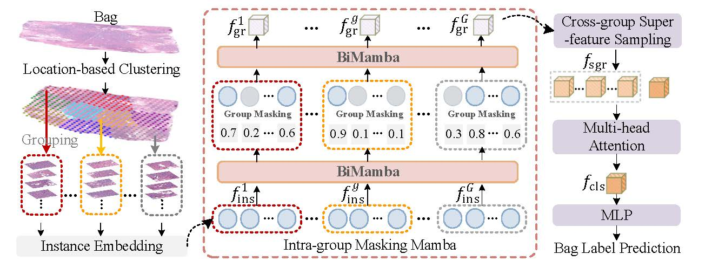
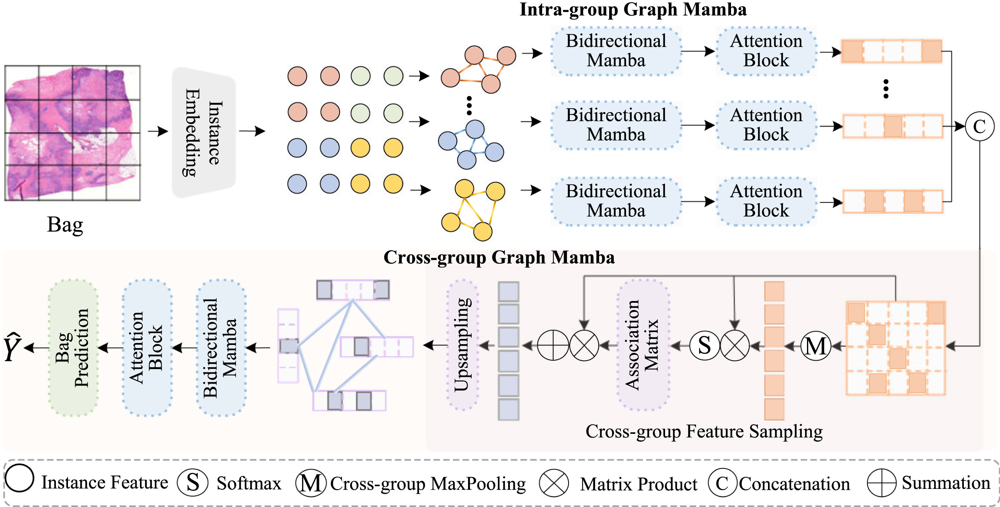

|
Tingting Zheng 郑停停
Ph.D. Candidate Email: zhengtingting008@gmail.com
|


BiographyI'm currently a Ph.D. candidate at Harbin Institute of Technology, supervised by Prof. Hongxun Yao. Before that, I got my Master's degree from Northeastern University. My research interests include image processing and computer vision, mainly focusing on medical image analysis. |
News
|
Selected Publications |
|
 |
ICCV'25
GMMamba: Group Masking Mamba for Whole Slide Image Classification Tingting Zheng, Hongxun Yao, Kui Jiang, Yi Xiao, Sicheng Zhao IEEE International Conference on Computer Vision , 2025 [Paper] [Code] |
|
 |
Pattern Recognition
GraphMamba: Whole slide image classification meets graph-driven selective state space model Tingting Zheng, Hongxun Yao, Sicheng Zhao, Kui Jiang, Yi Xiao Pattern Recognition, 2025 [Paper] [Code] |
 |
CVPR'25
M3amba: Memory Mamba is All You Need for Whole Slide Image Classification Tingting Zheng, Kui Jiang, Yi Xiao, Sicheng Zhao, Hongxun Yao IEEE Conference on Computer Vision and Pattern Recognition (CVPR), 2025 [Paper] [Code] |
 |
AAAI'25
OODML: Whole Slide Image Classification Meets Online Pseudo-Supervision and Dynamic Mutual Learning Tingting Zheng, Kui Jiang, Hongxun Yao, Yi Xiao, Zhongyuan Wang Association for the Advancement of Artificial Intelligence (AAAI), 2025 [Paper] [Code] |
 |
CVPR'24
Dynamic Policy-Driven Adaptive Multi-Instance Learning for Whole Slide Image Classification Tingting Zheng, Kui Jiang, Hongxun Yao IEEE Conference on Computer Vision and Pattern Recognition (CVPR), 2024 [Paper] [Code] [Project Page] â Highlight Paper |
Honors and Awards
|
VisitingCopyright© 2024 Tingting Zheng. |